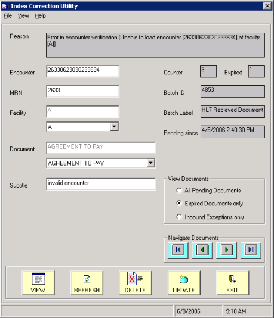
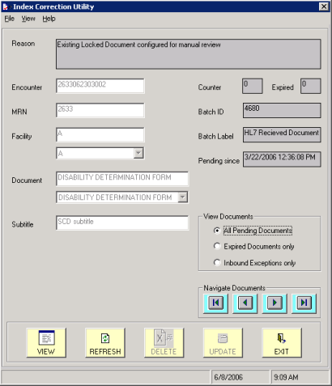
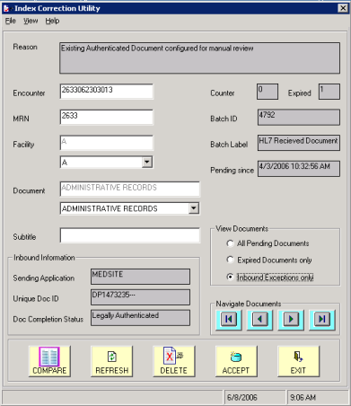

The Index Correction Utility user interface displays minor variations, depending on the view option you choose and the ICU permissions that are defined on your OneContent user profile.
The radio buttons in the View Documents group box enable you to select a view option. Each view option screen is shown in the following samples.
By default, the utility launches in “Expired Documents only” view mode.

Sample 1: Screen for Expired Documents only. This screen allows you to edit index information for expired pending documents that failed all upload attempts, or to delete the document from the CAB_HOLD table.
To access all pending error documents, select the All Pending Documents view option.

Sample 2: Screen for All Pending Documents. This screen allows you to only view index information for all documents that are either waiting to be uploaded to the system or that have failed all upload attempts. You cannot change index information or delete documents.
To access inbound exceptions, select the Inbound Exceptions only view option. This option is available only for users who have appropriate permissions set in their user profiles.

Sample 3: Screen for Inbound Exceptions only. This screen allows you to edit index information for inbound exceptions, to replace, version, insert, or append an inbound document (depending on processing rules set up for the exception), and to delete inbound documents from the inbound queue.
|
Field |
Description |
|---|---|
|
Reason |
The reason the document is pending in the CAB_HOLD table and failing upload by the Index Upload program. |
|
Encounter |
The Encounter Number currently associated with this document. |
|
MRN |
The ProdName-here MRN currently associated with this document. |
|
Facility |
The ProdName-here facility code currently associated with this document. Note: For multi-facility installations, the drop-down box beneath this field displays a list of selectable facility codes. |
|
Document |
The ProdName-here document type currently associated with this document. Note: The drop-down box beneath this field displays a list of selectable valid document types for the chosen facility. |
|
Subtitle |
The ‘Subtitle’ value associated with this document in DCS/QCI Workstation, COLD Agent, or Batch Compiler. |
|
Counter |
Number of times Index Upload program has attempted to upload the document. |
|
Expired |
Contains ‘1’ for expired documents and ‘0’ for pending documents. A document is expired if it has been retried the maximum number of times. |
|
Batch ID |
Batch ID of parent batch. |
|
Batch Label |
Batch Label of the parent batch. |
|
Pending since |
Date and time the document originally failed to upload. |
|
Inbound Information |
Displays only for the Inbound Exceptions view option. Includes the following fields for an inbound document:
|